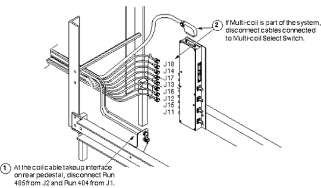
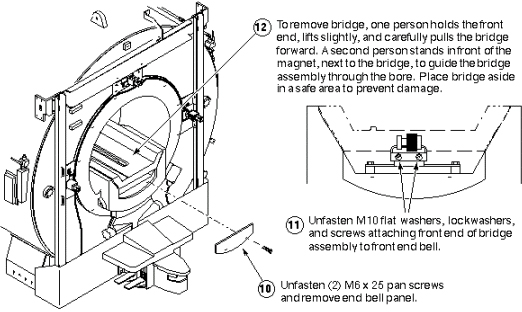
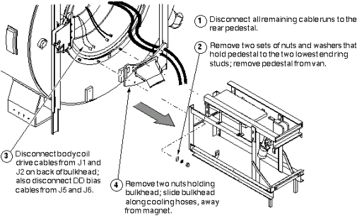

Operating Documentation
Direction 5133315-3, Rev# 14
Signa EXCITE HD 1.5T Service Methods
Module Version 1.0, Version Date 5/3/07
Operating Documentation |
| Required Persons | Preliminary Reqs | Procedure | Finalization |
|---|---|---|---|
| 4 minumum |
Perform the following steps at the front of the magnet:
| Item | Qty | Effectivity | Part# | Manufacturer | |
|---|---|---|---|---|---|
| Epoxy-filled Gradient Coil cart (2134810), cradle (2134810-2), and accessory kit (2134810-4). | 1 | - | 2144093 | - | |
| Class 1 electric rider lift truck, 4-wheel, rated at 6000 lbs (in case the coil, cart, and cradle must all be lifted together— a necessity in mobiles); with forks a minimum of 56 inches long; with side shifter for easy width adjustment and lateral movement of forks. | 1 | - | n/a | - | |
| Non-magnetic tool kit | 1 | - | 46-320273G1, G2, G3, or G4 | - | |
| 12-inch length of 1/2-inch I.D. hose | 1 | - | - | - | |
| 2 hose clamps for 1-inch O.D. hose | 1 | - | - | - | |
| 4-inch-long piece of copper tubing, 1/2-inch O.D. | 1 | - | - | - | |
| Roll of paper toweling | 1 | - | - | - | |
| Pair of latex gloves | (optional) | - | - | - | |
| Non-magnetic torpedo level or similar | 1 | - | - | - | |
| Condition | Reference | Effectivity |
|---|---|---|
Verify that the Epoxy-filled Gradient Coil accessory kit contains all the parts listed in Kit Contents. | - | - |
See the twelve steps in the following three illustrations, or, for greater detail, perform the procedure Bridge Replacement.
Bridge Removal - Sequence 1 (Illustration 1).
Illustration 1: BRIDGE REMOVAL - SEQUENCE 1

Bridge Removal -Sequence 2 (Illustration 2)
Illustration 2: BRIDGE REMOVAL - SEQUENCE 2

Bridge Removal - Sequence 3 (Illustration 3).
Illustration 3: BRIDGE REMOVAL - SEQUENCE 3

See Fixed Sites
This describes the removal of the rear pedestal and rear bulkhead, necessary for preparing any mobile for replacement of the combined body coil. See Illustration 4.
Illustration 4: REMOVING REAR PEDESTAL IN MOBILES

No finalization steps.